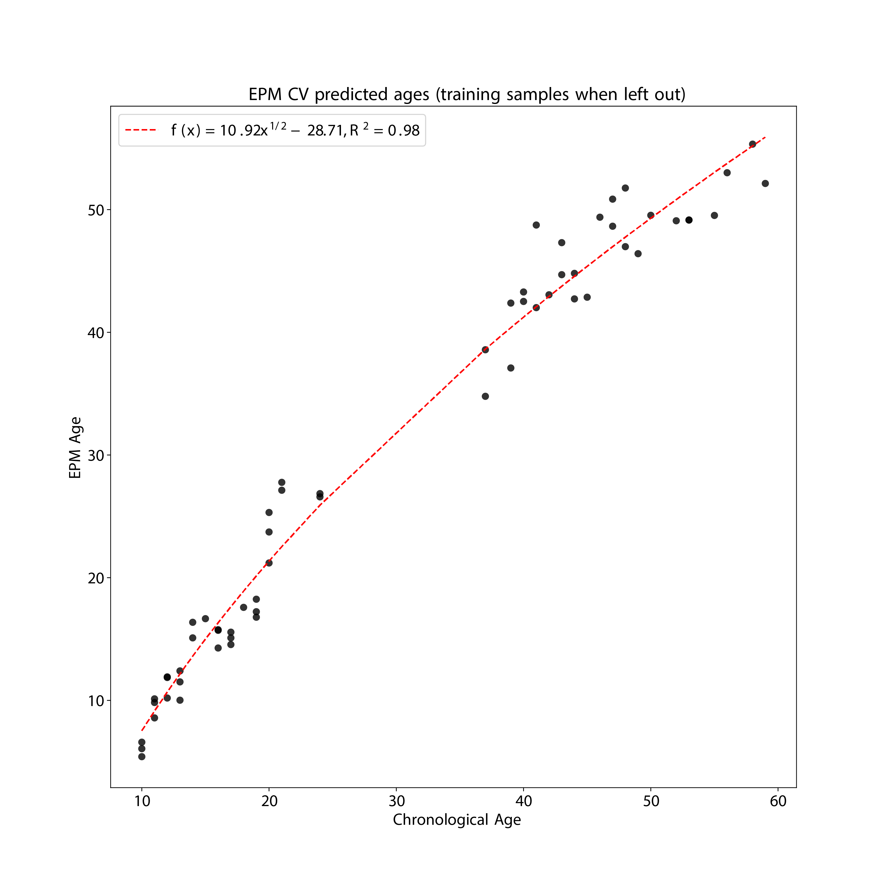
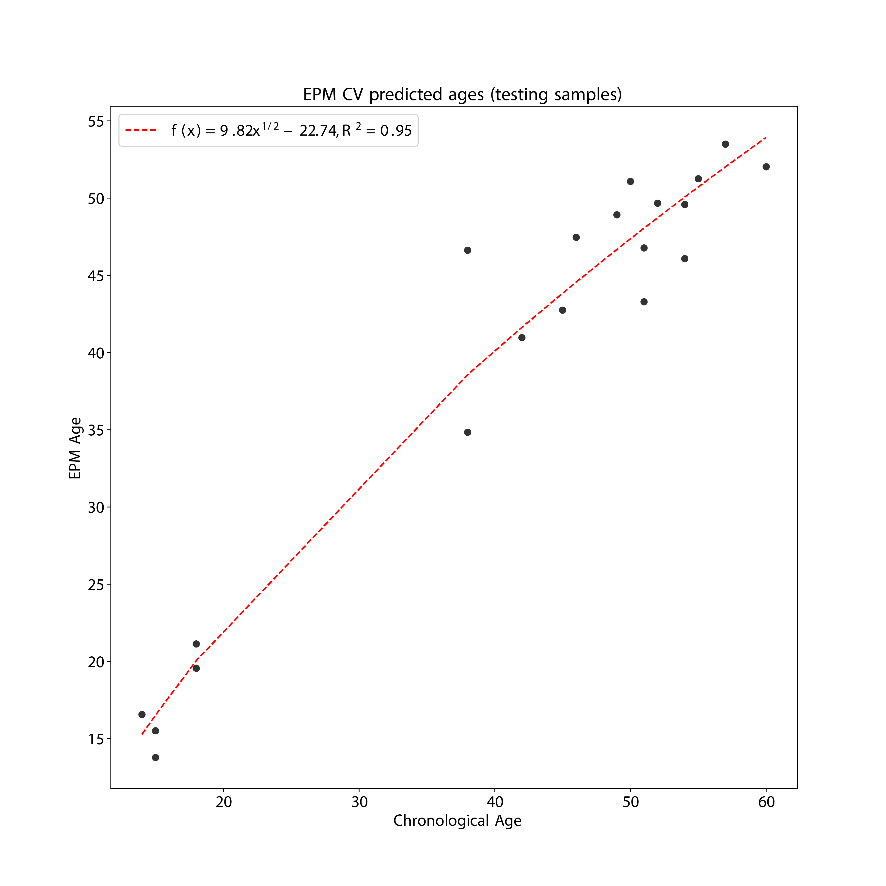

10. EPM
10.1. Description
EPM is a modeling tool, not a epigenetic clock. It can be used to model any phenotypes including aging.
In contrast to regression bases methods, the EPM does not assume a linear relationship between the epigenetic state and a trait of interest.
In contrast to other clocks within this package, the EPM algorithm does NOT come with pre-selected CpGs and pre-calculated coefficients. Instead, users are required to provide training data to build the model. In essence, EPM performs CpG selection, model fitting, and prediction simultaneously. For more technical details, refer to the EPM toturial.
The
epical EPMcommand need two input files: the first being the beta value spreadsheet, and the second being the meta-information file that specifies the training and test samples (see the example below).
Predictor CpGs |
Subject to training data |
Unit |
Subject to training data |
Target Tissue |
Subject to training data |
Target Population |
Subject to training data |
Method |
Fast conditional expectation maximization |
Reference |
|
Alias |
EpigeneticPacemaker (EPM) |
10.2. Usage
usage: epical EPM [-h] [-o out_prefix] [-p PCC] [-n NITER] [-k KFOLD]
[-e ETOL] [-d DELIMITER] [-f {pdf,png}] [-l log_file]
[-i {-1,0,1,2,3,4,5,6,7,8,9,10}] [-r ref_file] [--debug]
Input_file meta_file
positional arguments:
Input_file The input tabular structure file containing DNA
methylation data. This filemust have a header row,
which contains the names or labels for samples
Thefirst column of this file should contain CpG IDs.
The remaining cells in thefile should contain DNA
methylation beta values, represented as floating-
pointnumbers between 0 and 1. Use a TAB, comma, or any
other delimiter to separatethe columns. Use 'NaN' or
'NA' to represent missing values. This file can be a
regular text file or compressed file (".gz", ".Z",
".z", ".bz", ".bz2", ".bzip2").
meta_file This file contains the meta information for each
sample. This file must have a header row, which
contains the names or labels for variables. The 'Age'
variable must exist. The 'Designation' variable is
used to designate training and testing samples.
options:
-h, --help show this help message and exit
-o out_prefix, --output out_prefix
The PREFIX of output files. If no PREFIX is provided,
the default prefix "EPM_out" is used. The generated
output files include: "<PREFIX>.test_EPM_age.tsv": The
predicted EPM age for testing samples.
"<PREFIX>.train_EPM_age.tsv": The predicted EPM age
for training samples. "<PREFIX>.test_EPM_age.pdf" or
"<PREFIX>.test_EPM_age.png: Scatter plot showing the
trend between the predicted EPM ages and chronological
ages for testing samples. "<PREFIX>.train_EPM_age.pdf"
or "<PREFIX>.train_EPM_age.png: Scatter plot showing
the trend between the predicted EPM ages and
chronological ages for training samples.
"<PREFIX>.test_selected_CpGs.tsv": Selected feature
CpGs and their beta values for testing samples.
"<PREFIX>.train_selected_CpGs.tsv": Selected feature
CpGs and their beta values for training samples.
-p PCC, --pcc PCC Threshold of absolute Pearson correlation coefficient
between chronological age and beta values. This cutoff
is used to select age-associated CpG sites.
-n NITER, --niter NITER
Iteration times of expectation–maximization.
-k KFOLD, --kfold KFOLD
Folds for cross-valiation.
-e ETOL, --etol ETOL Error tolerance during model fitting. The acceptable
level of deviation between the EPM predicted age and
the chronological age.
-d DELIMITER, --delimiter DELIMITER
Separator (usually TAB or comma) used in the input
file. If the separator is not provided, the program
will automatically detect the separator.
-f {pdf,png}, --format {pdf,png}
Figure format of the output coef plot. It must be
"pdf" or "png". The default is "pdf".
-l log_file, --log log_file
This file is used to save the log information. By
default, if no file is specified (None), the log
information will be printed to the screen.
-i {-1,0,1,2,3,4,5,6,7,8,9,10}, --impute {-1,0,1,2,3,4,5,6,7,8,9,10}
The imputation method code must be one of the 12
digits including (-1, 0, 1, 2, 3, 4, 5, 6, 7, 8, 9,
10). The interpretations are: -1: Remove CpGs with any
missing values. 0: Fill all missing values with '0.0'.
1: Fill all missing values with '1.0'. 2: Fill the
missing values with **column mean** 3: Fill the
missing values with **column median** 4: Fill the
missing values with **column min** 5: Fill the missing
values with **column max** 6: Fill the missing values
with **row mean** 7: Fill the missing values with
**row median** 8: Fill the missing values with **row
min** 9: Fill the missing values with **row max** 10:
Fill the missing values with **external reference** If
10 is specified, an external reference file must be
provided.
-r ref_file, --ref ref_file
The external reference file contains two columns,
separated by either tabs or commas. The first column
represents the probe ID, while the second column
contains the corresponding beta values.
--debug If set, print detailed information for debugging.
10.3. Example
Prepare the meta-information file. In this instance, the 80 samples were shuffled, and subsequently, 60 (75%) samples were chosen as “training” samples, while the remaining 20 (25%) samples were designated as “testing” samples.
Note
The meta-information file must have two columns named as “Age” and “Designation”.
$ cat Test2_blood_N80_450K_info2.tsv
ID Sex Age Designation
I304 F 37 train
I080 M 12 train
I513 M 41 train
I118 M 10 train
I063 F 13 train
I550 M 19 train
I097 M 44 train
I282 M 50 train
I257 M 48 train
I015 M 24 train
I302 F 43 train
I290 M 14 train
I224 F 37 train
I057 F 44 train
I255 F 17 train
I572 F 41 train
I028 F 13 train
I215 F 16 train
I007 M 20 train
I537 F 21 train
I060 F 20 train
I481 F 56 train
I037 M 20 train
I251 F 48 train
I163 F 11 train
I589 M 59 train
I109 M 49 train
I006 M 53 train
I167 M 53 train
I004 F 11 train
I148 M 52 train
I482 F 24 train
I270 F 17 train
I074 F 12 train
I159 M 40 train
I478 M 39 train
I286 F 17 train
I127 F 15 train
I072 M 12 train
I035 F 19 train
I228 F 55 train
I020 M 11 train
I292 F 14 train
I114 M 47 train
I229 M 21 train
I349 M 43 train
I173 F 47 train
I032 M 13 train
I013 M 10 train
I495 M 46 train
I107 M 18 train
I213 F 16 train
I190 F 45 train
I058 M 19 train
I104 F 10 train
I211 M 16 train
I135 M 39 train
I091 F 40 train
I311 F 58 train
I152 F 42 train
I280 F 14 test
I182 M 51 test
I092 M 15 test
I391 F 52 test
I458 M 54 test
I279 M 55 test
I066 M 15 test
I077 F 42 test
I234 F 51 test
I024 F 49 test
I603 F 18 test
I379 M 57 test
I418 F 46 test
I268 M 38 test
I338 M 18 test
I034 F 38 test
I230 F 50 test
I412 M 60 test
I188 M 45 test
I274 F 54 test
$ epical EPM Test2_blood_N80_450K_beta.tsv.gz Test2_blood_N80_450K_info.tsv -o EPM
2024-01-23 07:26:09 [INFO] The prefix of output files is set to "EPM".
2024-01-23 07:26:09 [INFO] Read input beta file: "Test2_blood_N80_450K_beta.tsv.gz"
2024-01-23 07:26:39 [INFO] Fill missing values with ZEROs ...
2024-01-23 07:26:39 [INFO] Input file: "Test2_blood_N80_450K_beta.tsv.gz", Number of CpGs: 478313, Number of samples: 80
2024-01-23 07:26:39 [INFO] Read meta information file: "Test2_blood_N80_450K_info2.tsv"
2024-01-23 07:26:39 [INFO] Split samples into training and testing sets ...
2024-01-23 07:26:39 [INFO] 60 samples are included in training set: I304, I080, I513, I118, I063 ...
2024-01-23 07:26:39 [INFO] 20 samples are included in testing set: I280, I182, I092, I391, I458 ...
2024-01-23 07:26:39 [INFO] Calculate pearson correlation coefficients ...
2024-01-23 07:26:40 [INFO] 100 CpG sites are selected: cg00103778, cg00303541, cg00329615, cg00439658, cg00462994 ...
2024-01-23 07:26:40 [INFO] Save beta values of selected CpGs to "EPM.train_selected_CpGs.tsv"
2024-01-23 07:26:40 [INFO] Save beta values of selected CpGs to "EPM.test_selected_CpGs.tsv"
2024-01-23 07:26:40 [INFO] Initialize the EPM model ...
2024-01-23 07:26:40 [INFO] Fit the EPM model using training data ...
2024-01-23 07:26:40 [INFO] Get training sample EPM predictions (when left out) ...
2024-01-23 07:26:40 [INFO] Save predicted EPM ages of traning samples to "EPM.train_EPM_age.tsv"
2024-01-23 07:26:40 [INFO] Predict testing samples ...
2024-01-23 07:26:40 [INFO] Save predicted EPM age of testing samples to "EPM.test_EPM_age.tsv"
2024-01-23 07:26:40 [INFO] Generate scatter plot of test samples and save to "EPM.test_EPM_age.pdf"
10.4. Ouput
A total of six files were generated.
- 1. EPM.train_selected_CpGs.tsv
Selected predictor CpGs and their beta values from training samples.
- 2. EPM.train_EPM_age.tsv
Predicted age for training samples. Please note, the “cross validated version of the EPM” is implemented here, so prediction is made for each sample when the sample is left out of model fitting.
- 3. EPM.train_EPM_age.pdf
Scatter plot showing the concordance betweent “Chronological age” and “predicted age” (for training samples).
- 4. EPM.test_selected_CpGs.tsv
Selected predictor CpGs and their beta values from testing samples.
- 5. EPM.test_EPM_age.tsv
Predicted age for testing samples.
- 6. EPM.test_EPM_age.pdf
Scatter plot showing the concordance betweent “Chronological age” and “predicted age” (for testing samples).
EPM_train.png
{kind=link}
EPM_test.png
{kind=link}